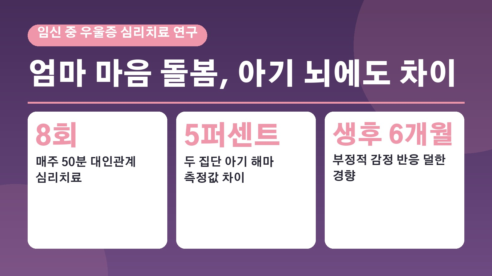
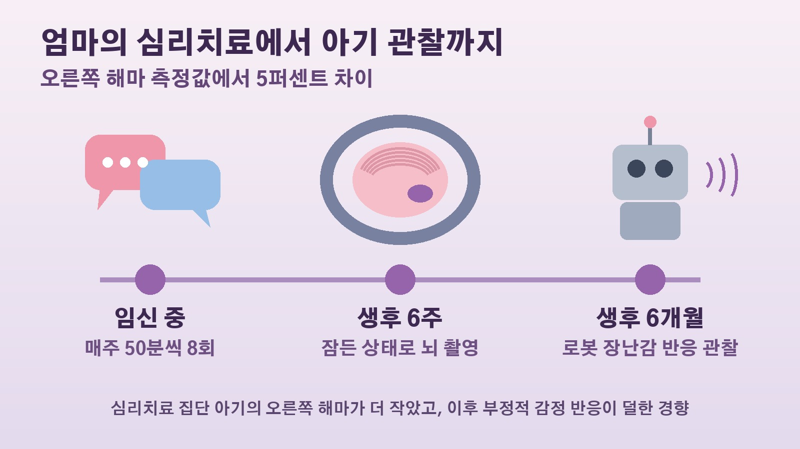

임신 중 우울증을 심리치료로 돌본 엄마의 아기, 생후 6주 뇌 해마에서 차이가 보였다는 234명 임상시험이 말해 주는 것

임신 중에 이유 없이 울적하고 무기력한 날이 이어지면, 이게 그냥 호르몬 탓인지 아니면 아기에게도 영향이 있는 건지 걱정되셨던 분들 계실 거예요. 마침 이 질문에 조금 더 가까이 다가간 연구가 국제학술지 네이처 커뮤니케이션스에 실렸습니다. 임신 중 우울 증상이 있던 엄마가 심리치료를 받았더니 태어난 아기의 뇌 일부와 생후 6개월 무렵의 감정 반응에 차이가 보였다는 내용인데요. 무엇을 어떻게 비교했는지, 어디까지 말할 수 있는 결과인지 차례로 정리해 볼게요.
엄마의 마음을 치료하면 아기에게도 차이가 생길까
임신 중 우울증은 생각보다 흔합니다. 연구팀은 임신부의 20에서 40퍼센트가 우울 증상을 겪는 것으로 추정된다고 설명했어요. 그동안 여러 연구에서 임신 중 엄마의 우울증이 자녀의 정서와 행동 문제, 정신건강 문제 위험과 관련이 있다는 결과가 나왔습니다.
다만 이런 연구 대부분은 두 가지가 함께 나타나는지를 지켜본 관찰 연구였어요. 그래서 엄마의 우울증을 치료하면 아기의 발달도 실제로 달라지는지는 판단하기 어려웠습니다. 미국 콜로라도대 앤슈츠 의대와 덴버대 등이 참여한 연구팀은 이 빈자리를 채우려고, 치료를 받을 사람과 받지 않을 사람을 무작위로 나눈 임상시험 결과를 바탕으로 아기들의 뇌를 들여다봤어요. 연구팀은 임신 중 우울증 치료가 아기의 뇌 구조에 영향을 줄 수 있음을 보여 준 첫 무작위 임상시험이라고 소개했습니다.
234명 임신부, 일주일에 한 번 50분씩 8번의 대화 치료
이 연구는 케어 프로젝트라는 임상시험에서 출발했어요. 덴버 지역 대형 병원 두 곳의 산과 진료실을 중심으로 우울 증상 검사에서 점수가 높게 나온 임신부 234명이 참여했습니다. 참여 조건은 18세에서 45세, 임신 25주 이하, 단태아 임신이었어요.
참가자들은 두 집단으로 나뉘었습니다. 한쪽은 대인관계와 사회적 지지에 초점을 맞춘 심리치료를 매주 50분씩 모두 8번 받았어요. 다른 쪽은 평소 받던 산과 진료에 더해 임신 중 우울증에 관한 교육을 한 번 받고, 지역사회 정신건강 지원 기관 안내를 받았습니다.
치료 효과는 엄마에게서 먼저 확인됐어요. 임신 말기까지 우울 증상 점수가 심리치료 집단에서는 검사 도구에 따라 47퍼센트와 52.5퍼센트 줄었고, 비교 집단에서는 13.0퍼센트와 32.3퍼센트 줄었습니다. 주요우울장애 진단에서 벗어난 비율도 심리치료 집단이 더 높았어요.
생후 6주 잠든 아기의 뇌 촬영에서 보인 해마 차이
연구팀은 이렇게 태어난 아기 109명의 뇌를 자기공명영상으로 찍었어요. 촬영 시점은 평균 생후 6주 무렵이었고, 아기에게 먼저 수유를 하고 포대기로 감싼 뒤 귀마개를 씌워 자연스럽게 잠든 상태에서 촬영했다고 합니다.
살펴본 부위는 기억과 감정 처리에 관여하는 해마, 그리고 감정 반응과 관련된 편도체였어요. 그 결과 심리치료를 받은 엄마의 아기들은 오른쪽 해마 부피가 비교 집단 아기들보다 작았습니다. 연구팀은 두 집단의 해마 측정값에 5퍼센트 차이가 났다고 설명했어요. 반면 왼쪽 해마와 편도체에서는 통계적으로 의미 있는 차이가 나오지 않았습니다.

임신 중 정신과 약을 먹은 비율은 심리치료 집단 25.5퍼센트, 비교 집단 21.8퍼센트로 비슷했고, 약 복용이나 출산 뒤 엄마의 우울 증상 같은 조건을 함께 고려해 다시 분석해도 결과의 방향은 같았다고 해요.
해마가 작으면 좋은 걸까, 6개월 로봇 장난감 실험과 연구팀의 해석
여기서 해마가 작다니 오히려 나쁜 것 아니냐는 생각이 드실 수 있어요. 연구팀은 이 차이가 이후 아기의 감정 반응과 어떻게 이어지는지도 확인했습니다. 생후 6개월에 움직이면서 소리를 내는 로봇 장난감을 아기에게 보여 주고, 얼굴 표정과 울음소리가 얼마나 강하게 나오는지를 점수로 매겼어요. 그랬더니 생후 6주 때 해마 부피가 작았던 아기일수록 6개월 때 부정적인 감정 반응이 덜한 경향을 보였습니다. 연구팀은 이를 생후 6개월의 더 나은 정서 조절과 연결된 결과로 설명했어요.
연구팀이 내놓은 해석은 이렇습니다. 엄마의 정신질환 같은 어려운 환경에 노출되면 아기 뇌의 일부 부위가 너무 이르게 빨리 자랄 수 있고, 이런 빠른 성숙은 뇌가 유연하게 다듬어지는 시기를 줄여 나중에 정신건강 문제에 더 취약하게 만들 수 있다는 가설이 있어요. 실제로 앞선 관찰 연구에서는 엄마의 임신 중 우울감이 클수록 생후 2주에서 6주 아기의 해마가 더 큰 경향이 보고되기도 했습니다. 연구팀은 이번 결과가 심리치료가 이런 이른 성숙을 누그러뜨렸을 가능성과 맞아떨어진다고 봤어요. 다만 어떤 경로로 이런 차이가 생겼는지는 아직 확인되지 않았다고 밝혔습니다.
아직 모르는 것과 연구팀이 강조한 임신기 정신건강 지원
이 결과를 받아들일 때 함께 알아 두면 좋은 한계도 있어요. 연구팀은 이번 결과만으로 임신 중 우울증 치료가 자녀의 장기적인 정신건강 문제를 막아 준다고 단정할 수는 없다고 했습니다. 해마의 차이가 구체적으로 어떤 구조적 특성을 뜻하는지, 초기 정서 조절과의 관련성이 자라면서도 이어지는지는 더 지켜봐야 한다는 거예요.
또 미국의 한 도시 지역에서 영어를 쓰는 참가자만 대상으로 했고, 뇌 촬영도 한 번만 했습니다. 이번 결과는 대인관계 중심의 특정 심리치료에 관한 것이어서, 항우울제 치료가 같은 효과를 낸다는 뜻도 아니라는 점이 함께 지적됐어요.
그럼에도 연구팀은 임신기를 엄마의 정신건강을 돌볼 중요한 시기로 봐야 한다는 점을 이번 결과가 뒷받침한다고 강조했습니다. 교신저자인 덴버대 엘리시아 데이비스 교수는 임신 중 엄마의 정신건강을 지원하는 일이 곧 아이의 건강에 투자하는 일이라고 말했어요. 임신 진료 과정에서 정신건강 서비스를 더 쉽게 이용할 수 있게 하면 엄마의 마음 건강과 아이의 건강한 발달 모두에 도움이 될 수 있다는 것이 연구팀의 설명입니다.
정리하면 임신 중 우울 증상이 있던 엄마가 8번의 심리치료를 받았을 때 엄마의 우울 증상이 더 많이 줄었고, 아기의 오른쪽 해마와 6개월 때 감정 반응에서도 차이가 보였습니다. 아이가 자라면서 이 차이가 어떤 의미를 갖는지는 앞으로의 추적 연구가 답해야 할 몫이에요. 임신 중 우울감은 흔하고 치료할 수 있다는 점, 그리고 그 돌봄이 엄마만을 위한 일이 아닐 수 있다는 점이 이번 연구가 남긴 메시지입니다.
참고한 기사: 세계일보 임신 중 우울증 심리치료, 아기 뇌 발달과 정서 조절과 연관 2026년 10월 19일, 연합뉴스 건강포커스 임신 중 우울증 적극 치료해야, 아기 뇌 발달에 영향 가능성 2026년 10월 17일, 메디컬투데이 임신 중 우울증 치료, 아기 뇌 발달에 긍정적 영향 가능성, 미국 콜로라도대 앤슈츠 의대 보도자료 2026년 10월 16일, 네이처 커뮤니케이션스 논문 캐서린 데머스 외 2026년 10월 16일
태그
임신중우울증 산전우울증 임산부우울증 심리치료 대인관계심리치료 아기뇌발달 해마 정서조절 네이처커뮤니케이션스 임신부정신건강